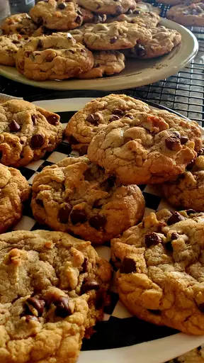

Delicious Chocolate Chip Cookies

Ingredients:
- 2 1/4 cups all-purpose flour
- 1/2 teaspoon baking soda
- 1 cup unsalted butter, room temperature
- 1/2 cup granulated sugar
- 1 cup packed light-brown sugar
- 1 teaspoon salt
- 2 teaspoons pure vanilla extract
- 2 large eggs
- 2 cups semisweet and/or milk chocolate chips
Instructions:
- Preheat your oven to 350°F (175°C). Line a baking sheet with parchment paper.
- In a medium bowl, whisk together the flour and baking soda. Set aside.
- In a large bowl, cream together the butter, granulated sugar, brown sugar, and salt until smooth.
- Beat in the vanilla extract and eggs until well blended.
- Gradually add the flour mixture to the wet ingredients, mixing well after each addition.
- Stir in the chocolate chips.
- Drop rounded tablespoons of dough onto the prepared baking sheet. Leave enough space between cookies.
- Bake for 10-12 minutes or until the edges are lightly golden.
- Remove from the oven and let the cookies cool on the baking sheet for 5 minutes. Then transfer to wire racks to cool completely.
- Enjoy your delicious homemade chocolate chip cookies!